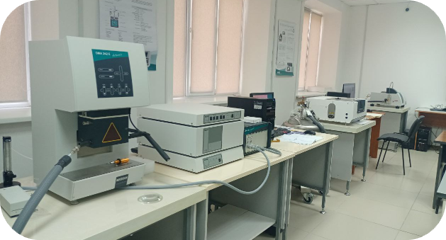
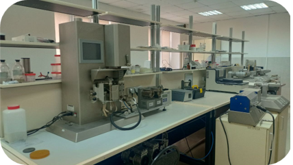
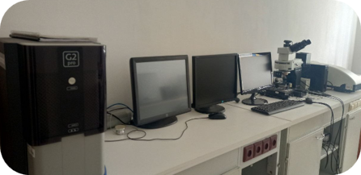
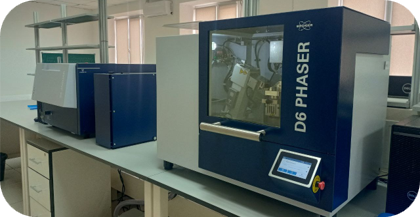
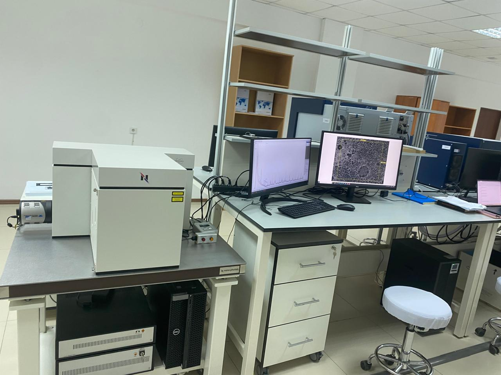

Зертхана жабдықтары






Әлия Молдағұлова даңғылы 34, Ақтөбе 030000, Қазақстан
Қ. Жұбанов атындағы Ақтөбе өңірлік университетінің Полимерлі композиттер зертханасы отқа төзімді полимерлі материалдарды, эпоксид және винилэфир шайырлары негізіндегі композиттерді әзірлеу және зерттеумен айналысады. Негізгі бағыттары — антипирен қоспаларын жасау, материалдардың термиялық, механикалық және отқа төзімділік қасиеттерін зерттеу, жоғары тиімді композиттер үшін бейорганикалық толтырғыштарды модификациялау.
Профессор Бекешев Амирбек Зарлықұлы
ф.-м.ғ.к., профессор
Ғылыми бағыты:
• Полимерлі композиттер
• Эпоксидті жүйелер
• Отқа төзімді материалдар
• Механикалық және термиялық қасиеттер





Thermal behavior and Fire resistant properties of Vinyl Ester Resines Modified with Dimethyl Methylphosphonate and Diatomite
DOI: 10.54355/tbusphys/4.1.2026.0047 →Boosting the Flame Retardancy of Vinyl Ester Resins via a DE@DMMP Hybrid: Reducing Migration and Improving Fire Performance
DOI: 10.1016/j.polymdegradstab.2026.111963 →Reactive phosphorus-containing monomers combined with modified diatomite fillers: A double-barreled approach to highly fire-safe vinyl ester resins
DOI: 10.1016/j.polymdegradstab.2026.112127 →
Ынтымақтастық мәселелері бойынша зертхана жетекшісі профессор А. З. Бекешевке жазыңыз:
amirbek2401@gmail.com